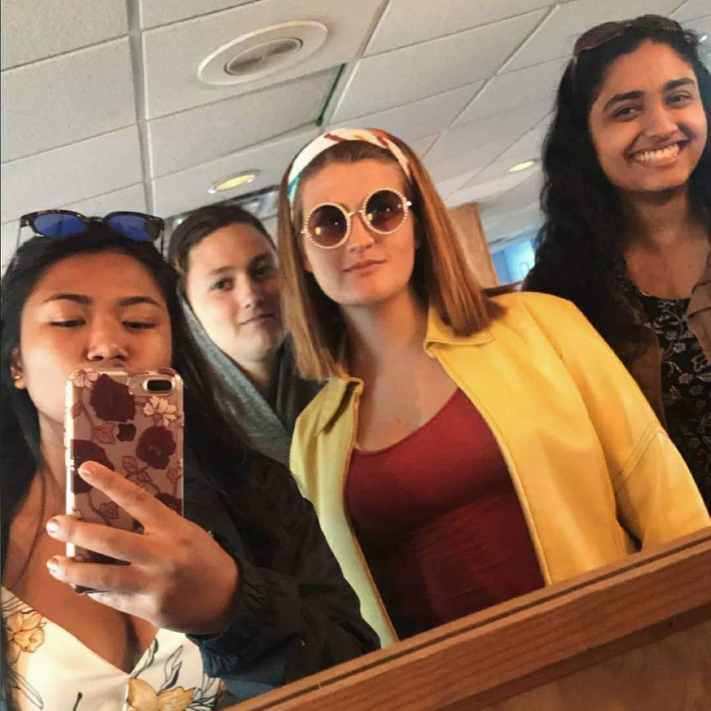

An introduction
July 17th, 2018

Well the time has come that I finally responded to those two requests for a blog. I suppose my daily rants on my finsta were just not enough. But fear not! I never back down from a challenge, and this will be quite fun for me anyway. Not to mention that this is not my first experience with blogging. To this day, all Analog Devices employees are fully capable of cringing at my bad jokes on the blog I started for the robotics interns last year. I was even recognized in the hall once for it. The fame did not, however, go to my head, and though I now only do autographs by special requests to control the onslaught of my millions of adoring fans, this blog will be 100% authentic Emily Satterfield. On occasion, this will mean I will go on swirling tangents amidst an existential crisis, but it will also include reflections on daily life, how I handle being a hot mess, my adventures to far away lands, and maybe even some recipes if I am feeling inspired. The first few posts I write will be based on prompts that were provided in an application to be an MIT blogger. If, by chance, the person who is evaluating that application is reading this right now, you look lovely today:) Just kidding. But in all seriousness, I truly do want to tell my story on the MIT admissions blog too, so hopefully that works out.
I wanted to come up with a more clever way to write my first ever blog post - perhaps a pun in the title, or a fun little anecdote - but if I’m telling the truth I have been sitting in my cubicle for about 4 hours now, and the tan walls and silence didn’t really bring me any inspiration. A picture of my new puppy will have to suffice.
A note to all the uncontrollable things I keep trying to control
August 4th, 2018
As Bob Dylan once wisely said, the times, they are a’changin’. In my last post I went on some huge rambling tangent about my inability to believe that that fact is true and my fear of the a’changed times. For those of you how know me, (if anyone is reading this at all) you probably know that I am a lil bit high strung. Just a teensy weensy bit. Personally, I don’t think it’s entirely a bad thing, I get things done on time and always to the best of my ability. I am also aware of the fact that I am this way. It’s kind of weird knowing that you can be uptight, but I know I can. The truth of the matter is, I deal with an incredible amount of anxiety over certain things, and to combat those things I like strict routines, productivity, and sometimes a spreadsheet here or there.
Sure, sure, you might be thinking, “what the heck is up with this chick? She needs to take a trip to Chilladelphia!” And in that statement you are asking a very valid question and making a good point. I do need to relax. IT’S JUST HARD SOMETIMES OKAY? (I hope you read that as a crazy-eyed plea for understanding instead of as me yelling) Anyways, I thought it would therapeutic if I tried to write some letters to things that I can’t control that make me a little crazy. So here it goes.
Dear tardiness,
Why do you exist? I really tried this time. I woke up an extra 10 minutes earlier. Why do you make me lose my keys at just the right moment? Why does traffic seem to slow when I am already 3 minutes late to an appointment. Why, oh why, does the clock turn into a siren that can’t be ignored when my mom is STILL doing her makeup just before we need to get somewhere? I just want to look away! I just want to relax and remember that 5 minutes late is really nothing in the grand scheme of things! Why in those moments does it feel like everything important in the world is being missed every second I’m late? I am not the one who needs the chillaxative. It is you, tardiness, that needs to take a step back. I’m doing the best I can here. Name a time and a place and we can duke this one out. But just know, because of you, I will be very frazzled and AT LEAST 5 minutes late.
Regards,
Emily
Dear Unresponsiveness,
Tick tick tick. The time continues to pass. And yet there is no reply to any of the messages I sent. Why aren’t they replying? Was I too pushy? Are they uninterested? Did I make a grammar mistake that rendered my message undecipherable? And why is it that people can post on facebook, but not read their messages? Funny. Yet, while now I don’t see myself as the problem, when you rear your ugly head, unresponsiveness, why am I the one doubting myself. You create a terrible paradox. And while it would make no sense for you to reply to this letter, if you are reading it (which I can never really tell), please take it to heart. You are causing me to stress out!
Regards,
Emily
Dear Traffic,
I would tell you to stop, but it appears you have already done that to my car. Ah, yes, how I love sitting in my 100 degree car for an hour after working all day. I have never understood you, traffic. Why can’t everyone just move a little faster? You are fuel my tardiness. I am asking nicely, please get a move on.
Regards,
Emily
Well reading these letters all back now, (I procrastinated for a week before getting around to finishing this post) I’m not quite sure where I was going with this. At the very least, you just read a personification of my arch nemeses. They suck, but I guess that’s the way of the world, I can’t control everything :(
WOAH! One week til I move in! Summer Reflection Time!
August 14th, 2018
Disclaimer: the pics need to be reformatted but, yolo. It's late, it can wait til tomorrow:)
Believe me, I keep running it over in my head over and over, but still it seems unreal: there are 7 days til I am at the college of my dreams. And I’m going to live there! And be a student! And do college kid stuff! I’m gonna have roommates again! And a meal plan! And psets! And (hopefully a minimal number of) all nighters for exams! And new friends! And this is all real. Did I mention that this will all begin in less than 168 hours?! WOAH.
Because I am about to begin a new era, I thought it only appropriate to reflect and summarize the things I’ve done this summer. For those of you who don’t know, the plan for this summer was a) to work and earn money because college is lots of dollars and b) to have adventures and fun with my friends before we all part ways. In the past, I have spent my summers doing only the former, but this summer was the one where that was supposed to change. I wanted a break for once, and because a gap year would not be a good choice for me, gap weekends were born.
I spent nearly every weekend since I graduated doing the things that I love with the people I love. Not all of these things are extravagant. (Actually, most weren’t, I did all these things on a budget to keep in line with part a of my summer plan.) Nevertheless, these are the things I will remember forever. So...yay :)
Now onto the memories! I wanted sum all the good times up with some pictures and stuff and a few sentences about each. This doesn’t include ~everything~ I did, but you’ll get the main points.
1. I started an internship at Analog Devices! This was my second internship there, but I was in a different group this time around. In the failure analysis lab where I worked I got to use lots of cool machines. I also met a lot of really great people. Failure analysis puts the FA in family:) Here is a pic of me on my second day in my cube and a video of me cross-sectioning a part (which I did A LOT)
2. I went camping with my dad and sisters. This is a very large fire that came from dumping the bacon grease in it. Sure it’s not the safest tradition, but it’s tradition nonetheless.
3. July 4th! This is arguably one of my favorite days of the whole year because all my closest friends and our dads get together. There’s a parade and a barbeque and fireworks and good times.
4. Painting! Here are two paintings I did this summer. The first is my city, the second is my sister.
5. I got a new puppy! This is not the first time I’ve mentioned her, but here she is when we first got her. Her name is Jessie and she’s got the purest soul I’ve ever encountered.
6. I went to New York City with one of my future classmates. We’ve been friends since the Massachusetts MIT meet-up and along with another friend from robotics planned a weekend in NYC. Here I am at the top of the rock, in Brooklyn, and eating the best cookie in NYC (and possibly the world).

7. I also cooked a few dishes here and there. Here is a quinoa and bean salad. The dressing was pretty gross, not gonna lie, but the salad itself was a 9/10.
8. Thrifting. I love shopping and I love a hunt. This is a picture of my dad sifting through the by the pound section at the Garment District. (Which just so happens to be in Cambridge so you already know what’s about to go down)
9. I went dorm shopping at ikea with one of my best friends and my sister.
10. I had a really good day at one point. Don’t remember when but it was good because there’s a video of me sing-vlogging.
11. I went to boston with two of my closest friends and my sister. We ate in the North End (which was hella bougie) and went on a cruise we found on Groupon. Then we went to the Isabella Stewart Gardner museum the next day. Sure, it’s right in our backyard, but the sense of adventure was ever-present.

12. I went to Lake Winnipesaukee with my sister and BBFLAAT. (best friend for life and after that, we were 9 when we came up with that, don’t judge) This is a picture of us at a diner inside an antique store. I don’t remember the joke I told, but it was probably stupid.
13. Cape Cod! I went with my mom and sisters and brother to Cape Cod this past weekend. My mom used to live there when she was a free-spirited, young person, so she showed us the sights. There is no denying the beauty. I mean C’MON!!!! Add summer in Martha’s Vineyard working a minimum wage job and biking around Oak Bluffs to the Bucket List. (The second pic is my sister and her friend asleep on the bus)
Tau Time.
August 17th, 2018
The clock is continuing to tick and it is officially t-minus 3 days til the day I leave for college. Still unbelievable, but I’m not going to get into that. Anyway, I thought it would be appropriate to kind of reflect on my decision making process in choosing MIT. Not actually though, I mean there’s a million reasons, but I’m talking about the spiritual decision making process.
For those that know me, you know that I’m incredibly superstitious. Spilling salt, jinxing things, umbrellas indoors, etc. In fact, the day of my interview for MIT I discovered that my MIT t-shirt that my dad found at Salvation Army (it’s bad luck to buy from a school store before you are admitted) was destroyed in the wash. I mean c’mon! That has to be a bad omen! Needless to say, I was very distraught, and quite a few tears were spilled that day. I was stressed - sue me! Anyway, I also believe in omens. Now this is all probably very ironic considering my love and trust for science, but even Einstein believed in some higher order.
Okay, to the point for real now- every single day (well almost) I look at the clock at 6:28. “What is so significant about 6:28?” You may be wondering. MIT releases their admissions decisions at 6:28. This was not the actual time I checked mine because I waited for my mom, but you probably see the connection. Perhaps my body is just accustomed to it at this point, but I like to believe it’s the universe telling me something.
When I was choosing between MIT and Harvard - yes, I did have to do this because Harvard ~is~ also magical in its own way and it’s a little blinding - I was torn. I wasn’t sure if me getting to Harvard was the universe telling me that I should branch out. MIT was the practical choice. I want to be an engineer. So, go to MIT, right? I wasn’t sure - honestly. Perhaps it was my desire to look for the universe to tell me what to do that led me to be so confused in the first place. I don’t really know. But on the day I committed to MIT (and this wasn’t the first time it happened, but the first time it was magical) I looked at the clock at Tau time. Could that reaaallly be a coincidence?
And I would be flat out lying if I said I wasn’t scared shitless about going to school in 3 days. In fact, I would be flat out lying if I said I wasn’t scared shitless about going to MIT. It’s MIT. WTF am I doing there? But everyday I look at the clock and I know that the universe is telling me something. If it wasn’t, I would look at the clock at 6:15 or 6:29.
Again today, I was having a breakdown on my way home from the gym. All this college stuff seems to be happening so fast. And then I looked at the clock and you can guess the rest.
I guess what I’m trying to say is not that you should base your college decisions on (possibly) coincidental occurrences, or a time of day, that’s probably not completely the best idea. Instead I’m trying to convince you (and myself a little bit) to have a little faith in the universe. I am not someone who completely believes that my life is planned out for me and I’m just on a destined path. But I do believe that you should trust in your choices and go with your gut and maybe, sometimes, a metaphorical Tau time. Whatever happens after that is up to you, but if you are following your gut, everything in the universe will eventually work to help you get where your gut is leading you. I truly believe that.
So, I look at the clock every day at Tau time, and I know that even though I’m scared and nervous and anxious, I have every reason to be excited for this next chapter.
Here
September 4th, 2018
The title of this blog is very vague because quite frankly, the past few weeks have been a blur. Life comes at you fast, it really do. However, here are a few highlights in list format to keep it somewhat organized, though it might not be entirely chronological:
- I moved in to college! That was stressful and sad. Tears were shed and I miss my family, but I’m thriving now
- I passed my swim test. Woo one GIR done!
- I went on a few runs in the Back Bay. Very pretty sights.
- I made a bunch of really great new friends
- I did a preorientation program and built a lil robot. My team was really fun and we had a lot of wholesome fun together
- I partied. A lot. There was orbeez wrestling, dancing, singing, wooden roller coasters, and pool games. It was a lot of fun, but I'm all partied out for a while.
- I went jet-skiing with a frat during rush
- I had a lobster dinner! My first lobster ever!! Also with a frat
- I went on a boat cruise party and got all dolled up. Again a frat rush event
- I ate a lot of free food
- I went to Haymarket and got cheap produce!! SOOOO CHEAP
- I registered for classes!
- I signed up for like 10 clubs
- I wrote my first blog in college (this one)
I probably missed stuff but yeah, college has been great so far. Now, you’re probably thinking, “this sounds like all play and no work, what the heck?” And you are correct. I have been living it up, but let me defend. I have been doing work, you should see my google calendar. But there is only so much micromanaging you can do without actual classes. And it was Rush and REX which means endless parties and free fun things. (especially if you’re a girl doing the frat rush stuff because they can’t turn you away until its bros only) And don’t worry, I have been nothing but responsible during this giant party. Truly.
Anyways, classes start tomorrow and I am incredibly excited. Not only to ~finally~ have some structure, but because I will finally have the chance to prove to myself that I belong here. I have met some of the most amazing and incredibly talented people in the world in just 3 weeks. The fact that I have just hit the tip of the iceberg is daunting. And humbling. I am eternally grateful for it. Still, it is easy to feel small next to such giants. I want to get my first pset tomorrow and make it my bitch. Maybe it won’t be easy. I don’t expect that it will be. But when I do finish it, and I know that I will, just for a moment, everything will feel like it’s even more meant to be than it already feels right now. And it does.
Tonight I went to a fire spinning show. It was unreal (obviously). And I fell in love. Not just with MIT again. Because as I am typing this in the lounge of my building right now, I am tearing up. Because I am so lucky to be here. To be surrounded by people so amazing. And because while I was sitting there, watching the show, I realized that that could be me! I can be whatever I want to be here! I can spin fire! I can learn salsa! And spanish! And build robots! And fall in love with my school every single day. Because I do.
Why all this gushiness now? Before I have even experienced the alleged hell that MIT can be? Because in a month from now, even if no one else has, I can read this post and remember all that I can be. The sky's the limit. I guess that’s true for any fresh start. Not just for me, but for anyone. Just remember that I guess. We’re here (wherever you are and where I am) and that’s pretty cool. Life is crazy.